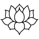
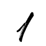

Kinesiske stjernetegn
Oksen
Beskeden • Tillidsfuld • Tålmodig
1949 • 1961 • 1973 • 1985 • 1997 • 2009 • 2021 • 2033
Rækkefølge

Position
Polaritet
Yin
Element
Jord
Lykkeblomst
Tulipan
Lykkefarve
Lilla
Lykketal
En
Oksen er det andet kinesiske stjernetegn.
Personer født i oksens tegn er ansvarlige, jordnære og
hårdtarbejdende. De er ofte stille og pålidelige, men kan også
fremstå stædige og temperamentsfulde, især hvis deres grænser
overskrides. Deres styrker ligger i deres handlekraft,
vedholdenhed og evne til at skabe tryghed. Deres svagheder kan
være en tendens til at være lukkede og at prioritere sikkerhed
over forandring.
Passer bedst med: Slangen, hanen og rotten.
Passer mindst med: Hesten og geden.
Rækkefølge
Position
Polaritet
Yin
Element
Jord
Lykkeblomst
Tulipan
Lykkefarve
Lilla
Lykketal
En
Rækkefølge
Position
Polaritet
Yin
Element
Jord
Lykkeblomst
Tulipan
Lykkefarve
Lilla
Lykketal
En
Personlighed
Personer født i oksens tegn har ofte en stærk ansvarlighed, både i
deres personlige– og professionelle arbejdsliv. Normalt er de
jordnære af natur, men de kan til tider være stædige og
temperamentsfulde, på trods af at de mener det bedste.
Oksen er hårdtarbejdende og kløgtigere end hvad de udgiver sig for
at være. Derudover er de tillidsfyldte og opsøger sjældent ros.
Styrker
Oksen er handlekraftig og ikke bange for at stå frem, når ingen andre vil. Ofte vil og kan de overkomme mulige udfordringer på deres vej, hvilket andre omkring dem finder ro i. De er ikke letopgivende og arbejder struktureret imod deres mål.
Svagheder
Oksen har ofte en lukket og mild personlighed, men bliver der skubbet til deres grænser, kan de let blive tempermantfuldte. De værdsætter oftere sikkerhed over spænding i livet, hvilket kan hindre dem i bestemte situationer.